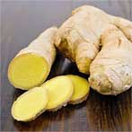

Arrêter de fumer facilement!

Sans envie de cigarettes

Sans syndrome de sevrage

Sans livres et hypnose

Sans médicaments et patchs
Commandez maintenant à prix réduit
Quand avez-vous fumé votre première cigarette,
vous exactement vouliez rester fumeur
pour tout la vie?
survolez la photo

1.
La nicotine est une substance qui crée une dépendance dès la première
dose. En termes de force d'impact sur le corps, il dépasse même l'héroïne, car il provoque une
dépendance dès la première bouffée.


2.
Avant de fumer pour la première fois, vous étiez sûr: Je
pourrais arrêter à tout moment! En réalité, c'est beaucoup plus compliqué qu'il n'y paraît.
3.
Peut-être que vous éprouvez de la honte ou de l'aversion pour
vous-même parce que vous ne pouvez pas arrêter de fumer vous-même. Vous entendez constamment
parler des dangers du tabagisme et vous êtes déjà immunisé contre les histoires terrifiantes des
fumeurs.

L'odeur des cigarettesvous hante partout,
aucun chewing-gum ni parfum ne le sauve.
Cependant, vous êtes unfumeur.
Alors pourquoi voulez-vous vraimentfumer?
Avec le tabagisme constant dans le cerveau, le nombre de
récepteurs de l'acétylcholine augmente considérablement (ils fournissent une libération brutale d'hormones
de joie) et leur sensibilité diminue.Ces récepteurs sont normalement activés par un composé
organique spécial, l'acétylcholine, très similaire dans la structure de la nicotine. Lorsque le nombre de
récepteurs augmente, l'acétylcholine cesse de manquer. Et pour se sentir heureux, une personne doit
constamment augmenter la dose de nicotine — c'est ainsi que la dépendance physiologique se forme.
Lorsque vous ingérez de la nicotine pour la première fois, vous devenez
immédiatement accro à cette substance toxique. Le désir de fumer contrôle votre cerveau, modifie vos
plans, votre comportement et même votre style de communication
Rappelez-vous quand vous
le plus envie de fumer?

Immédiatement après le réveil

Dans l'avion

Les clients non-fumeurs

Après l'alcool pris
Répondez àune question:
vous voulez vraiment vous libérer de la dépendance, arrêter de
dépenser beaucoup d'argent pour la fumée, profiter de la vie sans avoir à vous attarder et gérer le stress
plus facilement?
Si c'est le cas, NicoZero vous aidera.
Seulement 4 semaines –
et vous ne voudrez plus jamais fumer
1
Première semaine
Les substances qui composent NicoZero augmentent la sensibilité des
récepteurs de l'acétylcholine (ceux qui sont responsables du plaisir).
2
Deuxième semaine
Vous profitez de la nourriture délicieuse, de regarder votre série
préférée et de vos vacances habituelles. Les niveaux d'hormones de stress diminuent régulièrement. La
tension nerveuse disparaît et vous n'avez plus besoin "se détendre" avec une aide de cigarette.
3
Troisième semaine
Le cerveau bloque l'irritation des récepteurs de l'acétylcholine lors
de la prise de nicotine – vous arrêtez de vous amuser avec les cigarettes, mais vous pouvez toujours
continuer à fumer. À ce moment-là, le corps est complètement reconstruit pour recevoir l'hormone de joie
naturellement.
4
Quatrième semaine
Vous commencez à remarquer à quel point vous appréciez à nouveau ce
qui vous procure réellement du plaisir. Le besoin physique et psychologique de fumer disparaît!
Nicozero
Spray pour se débarrasser de la dépendance à la nicotine

Extrait de grains d'avoine
Renforce le système nerveux, les vaisseaux sanguins et le muscle
cardiaque, agit favorablement sur la composition du sang

Herbe de millepertuis
Provoque une aversion progressive et soutenue pour l'odeur du
tabac, nettoie les voies respiratoires des dépôts nocifs.

Gingembre
Dilue le sang, réduit l'adhérence des plaquettes et la formation de
caillots sanguins, nettoie le corps des toxines.

Aubépine
Élimine les substances du corps formées après la désintégration de
la nicotine, nettoie les poumons
Avis d'un spécialiste
La dépendance à la nicotine est le fléau des temps modernes. S'en
débarrasser est vraiment difficile, souvent pour moi-même, en tant que médecin, il semblait trop
difficile.
Maintenant que NicoZero est entré sur le marché, il ne fait
aucun doute que tout le monde peut arrêter de fumer une fois pour toutes, quelle que soit son ancienneté.
Au cœur de NicoZero approche fondamentalement nouvelle. Le médicament affecte les récepteurs
responsables de l'envie de fumer. Pour la première fois, le cerveau est trompé en croyant qu'il reçoit
une dose de nicotine, car NicoZero répond aux besoins réels du corps résultant du tabagisme. Peu à peu,
l'habitude d'allumer une cigarette disparaît. Au moment de la fin du cours avec NicoZero, vous
développez une aversion persistante pour les cigarettes, et vous vous débarrassez facilement, et
surtout, pour toujours, de la dépendance à la nicotine la plus forte.
Gilles Mercier,
médecin de catégorie supérieure, narcologiste
Avis о NicoZero

Serge
39 ans
Je fume depuis l'âge de 14 ans. Maintenant, j'ai 39 ans et il y a
seulement un an, j'ai pu me débarrasser de la dépendance à la nicotine avec NicoZero. Pendant 24
ans de vie consciente, je fumais et je ne pouvais pas imaginer à quel point la vie était belle sans
cette horrible odeur de tabac, ces dents jaunes, cette toux éternelle et les regards en colère des
non-fumeurs. J'ai essayé de quitter plusieurs fois par moi-même, en vain. Maintenant, grâce à
NicoZero, la seule pensée de la cigarette me dégoûte.

Claudine
42 ans
J'ai essayé différentes façons d'essayer d'arrêter de fumer: sinon
tous, alors beaucoup. Ils se terminaient tous de la même manière: au plus tard un mois plus tard, je
revenais à la cigarette. Elle était pour moi un ami, un soutien, un soutien, un moyen de se
divertir. Maintenant, je comprends à quel point j'étais stupide, parce que je me trompais moi-même,
parce que je ne pouvais tout simplement pas arrêter de fumer. Et toutes les méthodes que j'ai essayées
ne sont pas plus qu'un mouvement de marketing. J'écris un avis sur NicoZero, parce que c'est lui qui
m'a aidé à arrêter de fumer pour TOUJOURS. Grâce à ce remède merveilleux, je ne fume pas depuis 8 mois
et je sais avec certitude que je ne reviendrai plus jamais à cette habitude pernicieuse.

Daniel
33 ans
Parmi toutes les façons de dire au revoir au tabagisme, NicoZero
est peut-être le seul efficace. C'est ce que j'ai vu de ma propre expérience. Il m'a suffi de
trois semaines pour éteindre ma dernière cigarette de ma vie et décider de ne plus jamais recommencer
à fumer. Merci aux fabricants pour cet outil!
Méfiez-vous des faux!
En raison de l'énorme popularité du NicoZero, des échantillons falsifiés
ont commencé à apparaître. Le produit original NicoZero ne peut être acheté que sur ce site.
Souvent questions
Pas. Le gain de poids lors du refus de la nicotine par la méthode
volontaire est associé à des tentatives de calmer le système nerveux, de supprimer la soif de nicotine
avec de la nourriture. Avec NicoZero cela ne se produira pas, car cette méthode calme d'abord le système
nerveux et seulement alors vous arrêtez complètement de fumer pour toujours.
NicoZero contient des substances qui sont absorbées dans le sang et
éliminent progressivement la nicotine du corps. Il y a un processus de désintoxication: les organes
empoisonnés améliorent le travail. Pendant la période de désintoxication, le corps privilégie le
renouvellement des organes plutôt que la réception d'une nouvelle dose de nicotine. Vous vous sentirez
une amélioration du bien-être et la pensée de la cigarette elle-même sera reléguée au second plan.
Pas. Contrairement à d'autres médicaments, NicoZero ne contient pas
de substances toxiques pouvant provoquer une réaction négative du corps.
D'autres questions?
Demandez-les à notre spécialiste, vous serez rappelé et conseillé.
Poser une question
Arrêter de fumer facilement!
Sans envie de cigarettes
Sans syndrome de sevrage
Sans livres et hypnose
Sans médicaments et patchs
Commandez maintenant à prix réduit